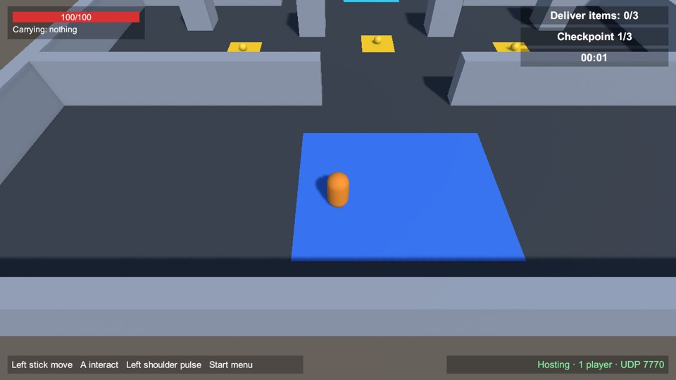
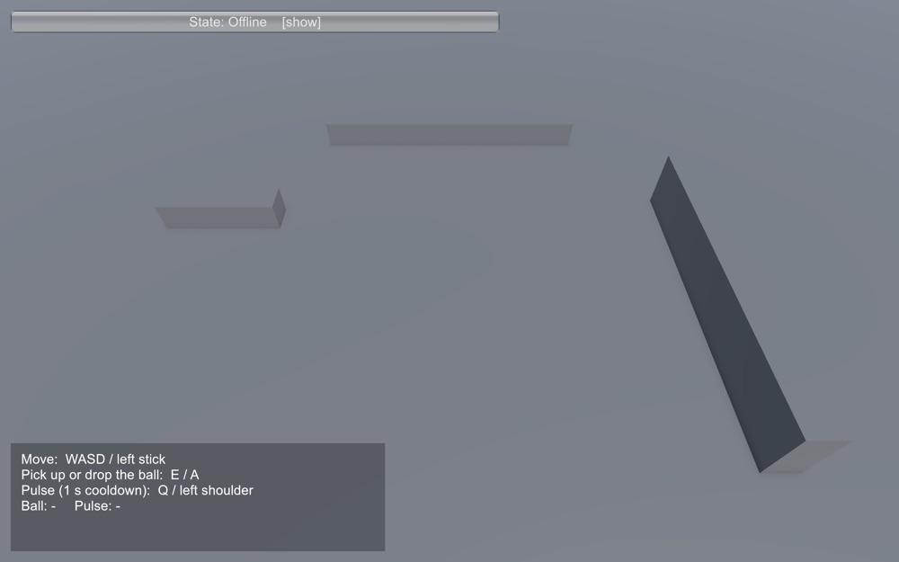
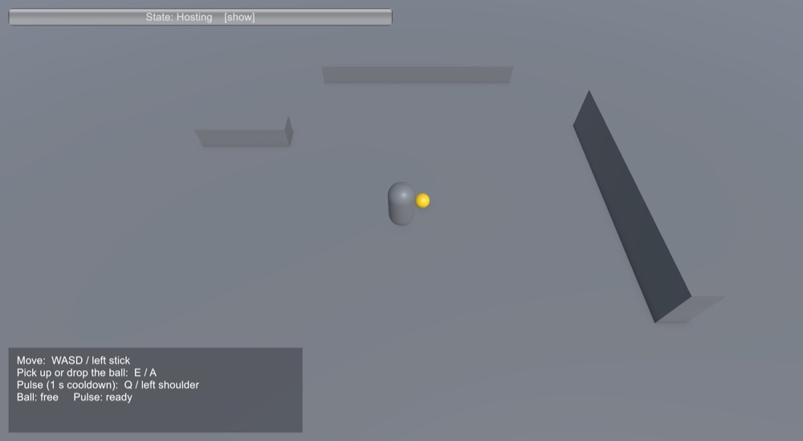
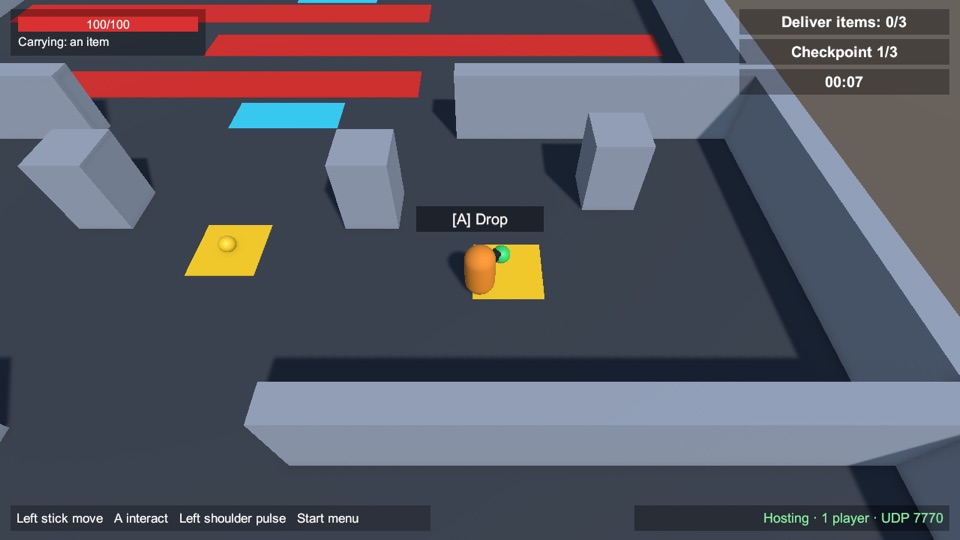
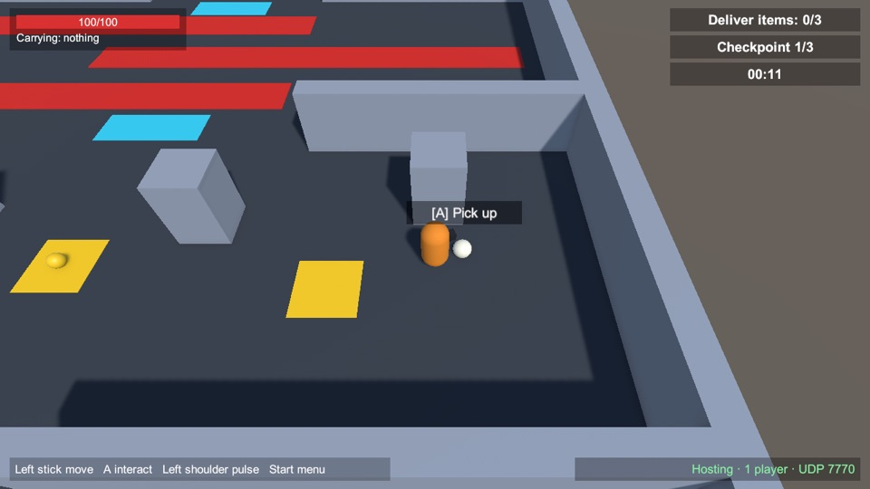

Each mechanic shows its main idea first. The rules, the technical details, the history (when it appeared and changed) and the bugs found along the way fold open below it.
- Sessions
- Recent hosts
- Host addresses
- Movement and camera
- Controls and devices
- The shared ball
- The pulse
- Joining late and starting over
- Updates and versions
Sessions: Solo, Host, Join, Server since v0.1.0
A session is one computer acting as the server, plus up to four players. Solo is a session only you are in; Host lets friends join you; Join connects to a host's address; Server runs a session with no player of its own.

Rules and numbers
- Up to 4 players per session; one computer (the host or the server) is the authority.
- Solo is a host that listens on your own computer only, so nobody else can connect. It follows exactly the same rules as multiplayer.
- Join needs the host's address. The port is UDP 7770.
- Everyone must run the same version. Otherwise the host refuses with “Incompatible game version. You have X; the host has Y.”
- Failures are explained: Could not reach the host (wrong address, host not started, firewall), Could not start the server (the port is already in use).
- The state button reads Offline, Starting, Hosting, Serving, Connecting or Connected, and folds the panel away.
How it works
The host's computer decides everything that matters: movement results, who holds the ball, cooldowns. Clients send what the player wants and draw what the server says. Solo uses the same code, so single-player and multiplayer cannot behave differently.
Technically: FishNet over the Tugboat UDP transport. When a client connects, the server checks its version and answers before disconnecting a client that does not match.
History
Bugs and fixes
Recent hosts since v0.2.2
The game remembers the last three hosts you joined, so connecting again takes two clicks.
Rules and numbers
- An address is saved only after you connected successfully.
- Newest first, at most three; joining an old host again moves it to the top without a duplicate.
- Clicking an entry only fills the field: you still press Join.
- The x deletes an entry.
- Only letters, digits and
. : - _are accepted, so nothing odd is stored. - The list is stored on your device in the game's preferences. It survives updates and is never sent anywhere. Automated (headless) runs never save to it.
How it works
The list is plain logic in the Net library (RecentHosts), tested on its own: ordering, the limit of three, deleting, refusing odd text, and a save-and-load round trip. The game stores the text form in Unity's PlayerPrefs.
History
- v0.2.2 2026-11-03 Added.
Bugs and fixes
No known problems.
Host addresses since v0.2.1
When you host, the game lists every address friends can use, labelled by kind, with a Copy button for each.

Rules and numbers
| VPN / virtual LAN | Tailscale, ZeroTier, Hamachi, WireGuard. Best for friends in different places. |
| Local network | Your home or office network: for people on the same Wi-Fi or cable. |
| Virtual machine or container | Shown for completeness; rarely useful to friends. |
| Public | An address assigned directly to this computer. Behind a normal router, use the button below. |
- Show my public address asks api.ipify.org only when you press it, which tells that service your address.
- A public address only works if your router forwards UDP port 7770 to your computer. Behind a VPN or proxy it shows that service's address instead.
- Only IPv4 addresses are shown; the list refreshes every 10 seconds.
How it works
The game reads the computer's network interfaces and sorts each address by rules: private ranges (10/8, 172.16/12, 192.168/16) are local, 100.64/10 is the range Tailscale uses, interface names such as tailscale, zt, wg, utun mean VPN, names such as docker or vmnet mean virtual. Loopback, link-local and multicast addresses are never shown. 21 known cases are checked automatically, including the exact edges of each range.
History
Bugs and fixes
wlan0) and Windows adapter names are based on naming conventions and have not been checked on those systems.Movement and camera since v0.1.0
You move with WASD or the left stick, relative to the camera. Your own character reacts instantly, even online.

Rules and numbers
- “Up” on the screen is away from the camera, whatever direction the camera faces.
- Diagonal movement is not faster than straight movement.
- Walls and obstacles stop everyone at the same place.
- Other players' characters are drawn where the server says they are.
How it works
Your computer moves your character at once (prediction), the server runs the same movement from your inputs and corrects you if the two ever disagree. Movement uses Unity's character controller driven by FishNet's prediction, ticking 30 times a second.
Tested: after settling, client and server positions agreed to 0.000 m on a clean network and with 100 ms latency and 5% packet loss, including walking into a wall and corrections pushed from the server.
History
- v0.1.0 2026-11-03 Movement with prediction, the follow camera, obstacles.
Bugs and fixes
No known problems. The art is placeholder, and the character does not show which way it faces yet.
Controls and devices since v0.1.0
Keyboard and mouse or a gamepad: the game follows whichever you touched last. A box at the bottom left always shows the controls.

Rules and numbers
| Move | WASD / left stick |
| Pick up or drop the ball | E / gamepad A |
| Pulse (1 s cooldown) | Q / left shoulder |
Sticks have a 20% dead zone. The start menu is clicked with a mouse (on a Steam Deck, use the touchscreen or trackpads).
How it works
A small input layer turns every device into the same intent: where you want to move, where you aim and which buttons are held, all in world space. The game and the server only ever see intents, never keys, so bots and tests can play too. Aiming from the stick or the mouse exists but nothing uses it yet.
History
Bugs and fixes
No known problems.
The shared ball since v0.2.0
One gold ball that anyone can pick up and carry. When two players grab for it at the same moment, the server picks exactly one of them.



Rules and numbers
- Press E / A within 2 metres of a free ball to take it. Only one player can hold it.
- Pressing again drops it: the ball lands on the ground, 1.1 metres in front of you (toward the camera, so it is not hidden behind your character) and turns gold again.
- Someone far away is refused; a held ball cannot be taken; only the holder can drop it.
- If the holder disconnects, the ball is released where they stood.
- Late joiners see the ball exactly where it is, held or lying.
How it works
Players only ask; the server decides. It keeps two shared values, who holds the ball and where it rests, and every computer draws the ball from those. That is also why simultaneous requests cannot produce two holders: they arrive one after another at the server, and the first valid one wins.
Tested automatically: three clients request the ball in the same frame, 15 rounds (5 of them with 100 ms latency and 5% packet loss). Every round has exactly one winner, all clients agree, and the winner varies. The rules (range, drop, holder leaving) and the held and dropped positions on every client are checked too.
History
Bugs and fixes
The pulse since v0.2.0
A short ability on a one-second cooldown. It exists to show that timing rules are decided by the server, not by whoever presses fastest.

Rules and numbers
- Q / left shoulder fires the pulse; your character flashes orange for 0.3 seconds on every screen.
- The cooldown is one second. Pressing during the cooldown does nothing.
- Only the owner can fire their own pulse.
How it works
The cooldown is counted in server ticks (30 ticks is one second), so it does not depend on anyone's frame rate or connection. A client asks, the server accepts or refuses and answers, and an accepted pulse is broadcast to everyone.
Tested: two requests in the same tick give exactly one accept; a request during the cooldown is rejected and accepted again after it; others see the effect once; nobody can fire someone else's pulse; a new session starts with a fresh cooldown.
History
Bugs and fixes
Joining late and starting over since v0.1.0
You can join a session that is already running and see its current state at once. Ending a session leaves nothing behind.
Rules and numbers
- A player who joins late sees the others, the ball (held or lying, and where) and the pulse cooldowns as they are now.
- Leaving and coming back works repeatedly.
- Ending the session removes every object. The next session starts fresh: a free ball and a ready pulse.
How it works
The server sends the current shared state to every new player. When a session stops, every spawned object is removed. Tested: a late joiner receives exactly the live objects (not one that was removed before it arrived), current values and a predicted character that keeps tracking live; after a full stop no ball or player object survives, and the next session starts with a free ball and a fresh cooldown.
History
Bugs and fixes
No known problems.
Updates and versions since v0.1.0
The installer keeps the game up to date, keeps the previous version for going back, and starts the game. Details are in the user guide.
Rules and numbers
- Every download is checked for size and a SHA-256 hash before it is installed; a bad one is discarded and your installed version is untouched.
- The two newest versions stay on disk, so going back is instant.
- Starting from the launcher (or Steam Deck Gaming Mode) updates first, and starts the version you already have if the update cannot be done.
- Players on different versions cannot join each other, and are told so.
How it works
Releases live on GitHub; the installer is a small script that needs only standard tools. The game's version number is also its network-compatibility number.
History
Bugs and fixes
curl, its menu did not appear and it simply installed and launched. It now reads the keyboard from the terminal. The installer files on the release were replaced.